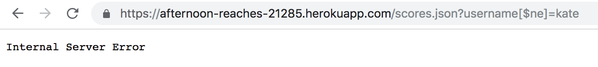
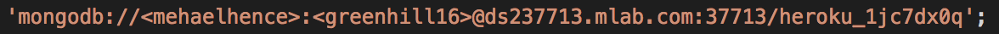
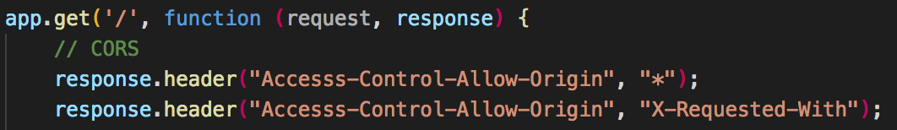

The product is a 2048 Game Center, in which a list of the top 10 scores from the game is printed to a web page, along with the associated username and time at which the game was completed. I was hired to find security vulnerabilities in Meha Elhence's work, through both black box testing and looking at the source code.
I first tried the tactics outlined by Ming in class using a black box approach. So, I first played with XSS and tried to insert a username that was really just javascript using curl. However, this just put "scriptalertscript" as a username into the database, meaning they accounted for XSS attacks. (when I later looked at the source code, I confirmed this was true). I then tried an injection attack by querying a username that I knew was not stored in the database using the [$ne] operator. However, this gave me an "internal server error". Curious, I tried just going to the /scores.json route without any query strings, and found a server error here, as well. After trying these two tactics, I scanned the source code for any clear security vulernabilities, and found a vulnerability in the MongoDB URI. However, because my partner's app wasn't fully functional, I ended up doing a lot of research on web app security, and tried to find attack tactics and security measures that may apply to the 2048 Game Center and my partner's code. I read about CORS, (D)DoS attacks, and the built in security of Heroku apps. The following 3 issues are what I could conclude from what we learned in class and the research I did.
This 2048 Game Center app was volunerable to a few security attacks. If one wanted to, they could alter the URL of the application to retrieve whatever information they wanted to from the database. Additionally, because the developer didn't specify exactly who could have access to the site, anyone, with mal intentions or not, would have access to it and therefore be able to manipulate in whatever way they wanted. Finally, the app is succeptible to attacks in which hackers severely and detrementally overwhelm a server with a lot of input.
In the url of the app, I queried: "...scores.json?username[$ne]=kate" to see all usernames "not equal" to "kate". This should ideally display all usernames in the database that are not "kate". However, as I mentioned in "Methodlogy", I was unable to truly test this, as I received a server error when I tried to reach the /scores.json route.
Although I was unable to actually test whether or not I could retrieve all usernames in the database, upon looking at the source code, there is nothing that suggests any precautions taken to try to combat this. I presume that if the code functioned properly, I would have succesfully retrieved this data and found a high security vulnerability.
When the author of this code declared their "MongoUri" variable to store their connection to their MongoDB database, they included their database address provided by mLab, as shown in the image below (in server.js).
This address requires that the developer include their username and password. So, by including the database in this manner, the developer effectively shared their username and password to the database to whoever has access to the source code of the application. This would be a high security vulnerability, particularly if the information in the database was of high privacy.
While it was required that each 2048 Game Center allow CORS, careless usage can lead to security vulnerabilities. The author of this code allowed sharing with any origin, as denoted by the "*" (in server.js, in the get "/" route, pictured below).
This means that any site can make a request to the author's app on behalf of their visitors and process its response. In general, if the developer has an implementaion like authentication or authorization that is based on what is automatically provided by the browser (like cookies), the requests triggered by the third party sites will use them too. In order to decrease this risk, it is suggested that the developer associate a list of domains that are allowed access to the app. While this is not of utmost importance for this project, if the app stored more private, important information, it would be essential that the author limit who has access to the site, while also keeping it accessible to those who need it.
While DDoS isn't something that was of great concern for this project and might not be for a 2048 Game Center generally, this is a security issue that concerns many larger sites with more traffic and sensitive information. DDoS, a Distributed Denial of Service attack, occurs when multiple systems flood the resources of a server, essentially overwhelming the servers with traffic to the point at which the host can not discern between what is legitimate or illegitimate information. Heroku has some measures in place to combat DDoS attacks, but there are additional measures that can be taken to protect against these kinds of attacks, if they are of concern.
While difficult to test for specific, tangible sercurity vulnerabilities in this code, particularly the ones demonstrated in class, like XSS and Injection attacks, due to limited app functionality, I was able to find some general security precautions that developers should take when creating a web app, as well as a vulnerability in the MongoDB URI declaration. Primarly, it is essential that developers do not trust user input! If a user is able to input whatever information they desire into a web application, they can easily retrieve and exploit private and potentially sensitive information. In web apps that require more security precautions, for example and app that has an authentication element to it, like storing usernames and passwords, it is important that more serious consideration is taken regarding security vulnerabilities. A developer would want to protect against brute-force password attacks, as well as any attack that would allow someone to access any information stored on the server or in a database associated with the site. Another aspect to consider is how long the user has been signed in to an app or has stayed on any given window - if there is a certain amount of inactivity, it would be important for the developer to have some kind of measure to ensure that the user is still using the site and wants to remain signed in. If the session "times out" at a certain amount of time, it will decrease the likelihood that an attacker could access sensitive information after a user has been using a site.
Piazza discussion and in-class lecture